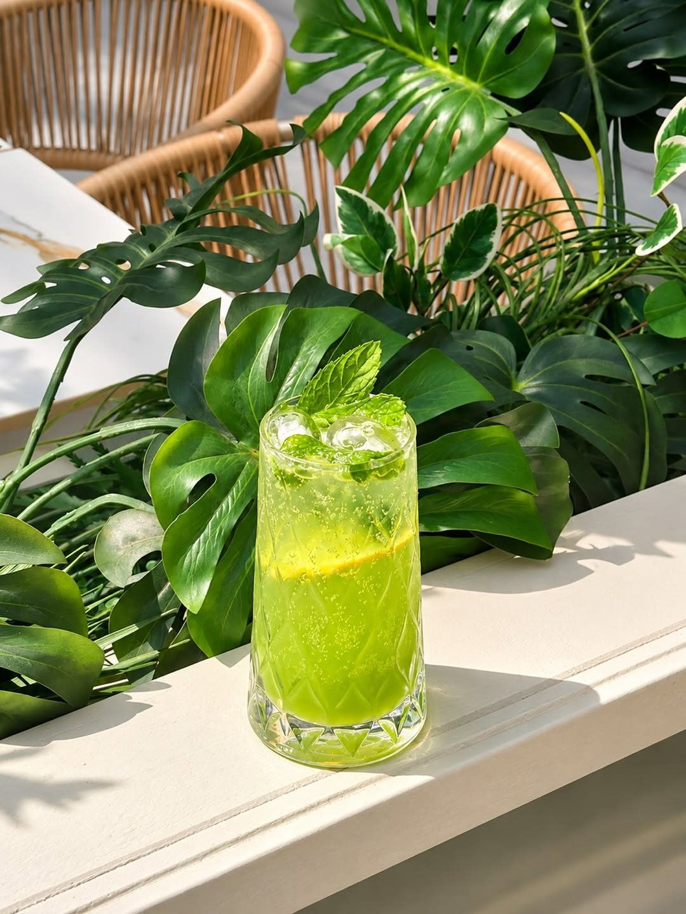
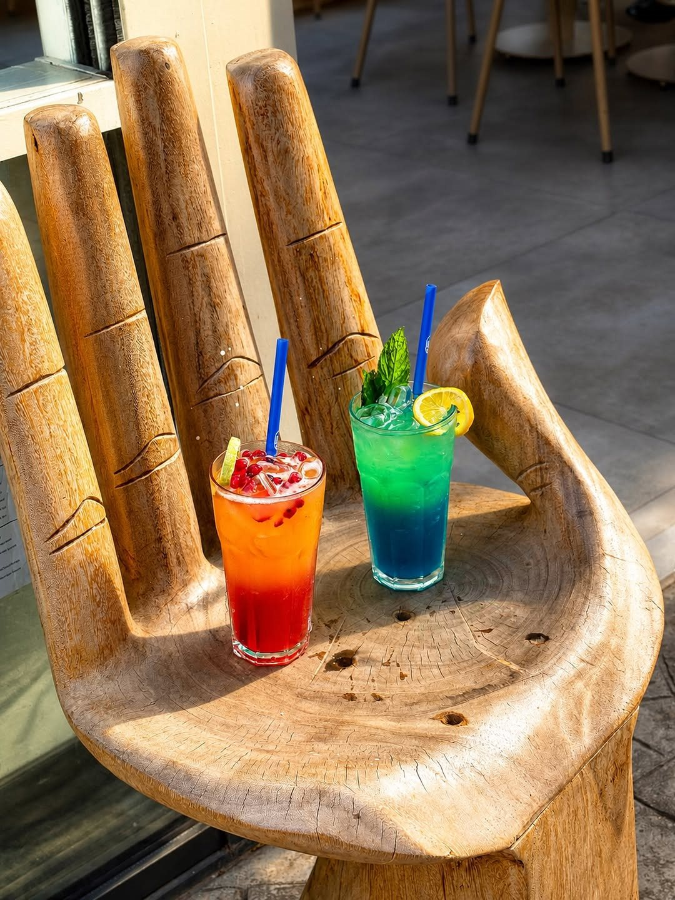
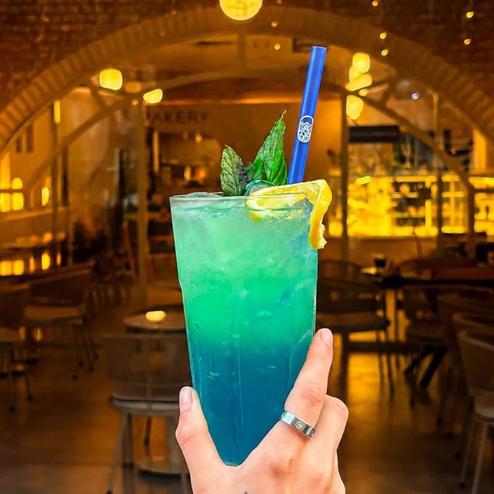
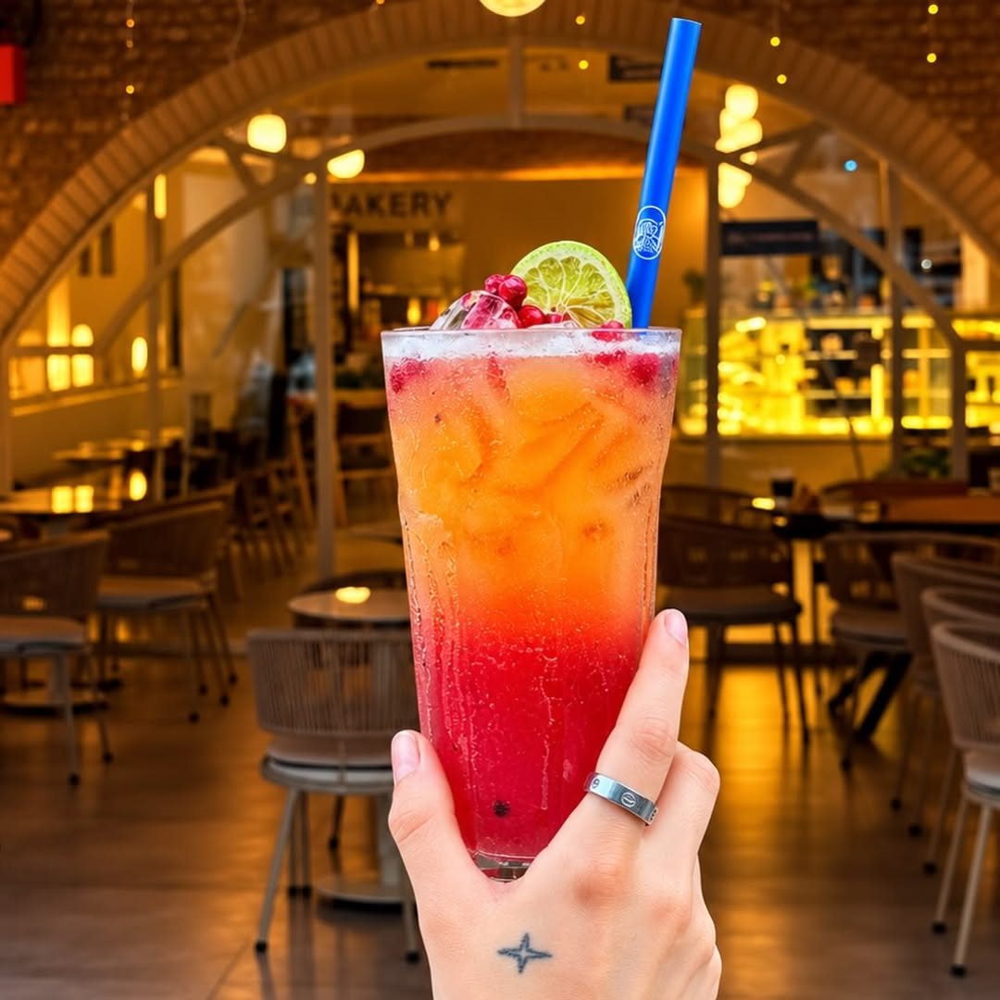
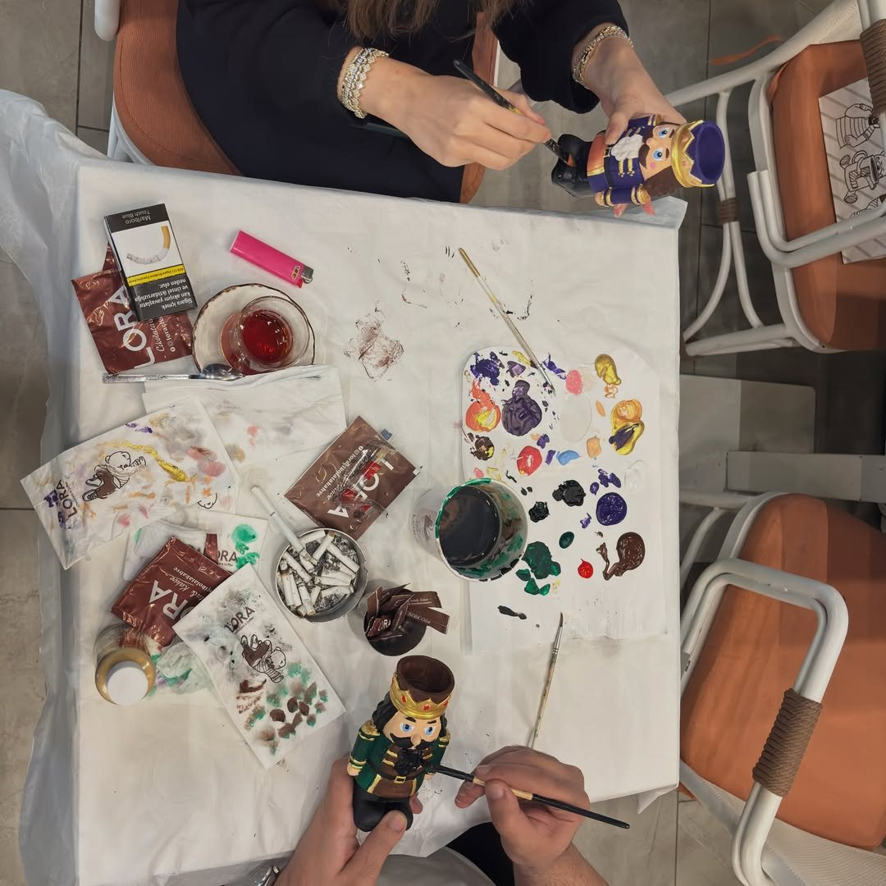
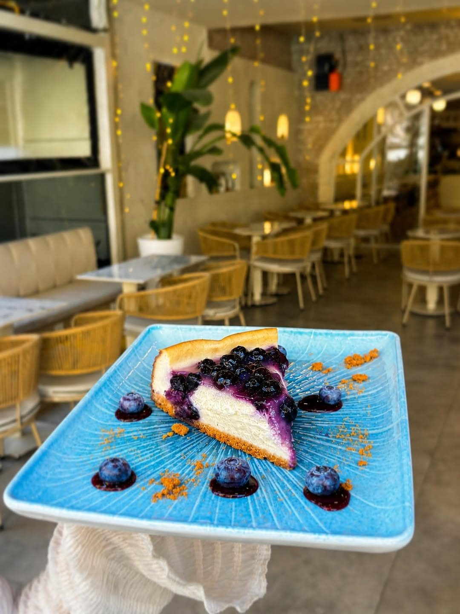

Kuzukulağı
Fera’nın yeşil renkli, limonla sunulan mocktail’i.
Makyol Yaşam, Beylikdüzü
Kahvenizi seçin, sohbete katılın.
Fera’da buluşmak için her zaman bir sebep var.

Kahve molasına farklı bir tat eklemek isteyenlere, kendi seçkimizden üç mocktail.

Fera’nın yeşil renkli, limonla sunulan mocktail’i.

Ekşi, tatlı ve soğuk bir mola.

Kırmızıdan turuncuya, gün batımının renkleri.

Boyalar, küçük tuvaller ve aynı masada bir araya gelen fikirler. Fera’nın atölye buluşmalarında kahve molasına yaratıcılık da eşlik ediyor.
Bir sonraki atölyenin tarihini, içeriğini ve katılım koşullarını öğrenmek için bize yazabilirsiniz.
Atölyeler için Instagram’dan yazınFera’nın kendi mutfağında hazırlanan Blueberry Cheesecake ile molayı biraz daha uzatın.
Güncel tatlı seçkisini sorun
Makyol Yaşam’da kahvenize eşlik edecek bir masa. Tek başınıza bir mola ya da arkadaşlarla uzayan bir sohbet için.
Google yorumları
Google yorumu ★★★★★
“Arkadaşlarınızla gelip rahatça sohbet edebileceğiniz rahat bir kafe. Kahvesi lezzetli.”Tacettin B.Yorumun tamamı
Google yorumu ★★★★★
“Mekan Merkezi konumda Lotus latte muhteşemdi iki kere gidebildim fırsat bulup gidemedim en kısa zamanda uğrayacağım”Melis A.Yorumun tamamı
Google yorumu ★★★★★
“Oldukça güzel bir ortam ,tatlılara bayıldım.Çalışanlar güler yüzlü , sonunda keyifle vakit geçirilecek bir mekan buldum.”Tuğçe O.Yorumun tamamı
Google yorumlarından kısa alıntılar. Puan ve yorum sayısı 2 Kasım 2026 tarihinde kontrol edilmiştir.
Güncel çalışma saatleri, menü ve atölye programı için telefonla veya Instagram’dan bilgi alabilirsiniz.